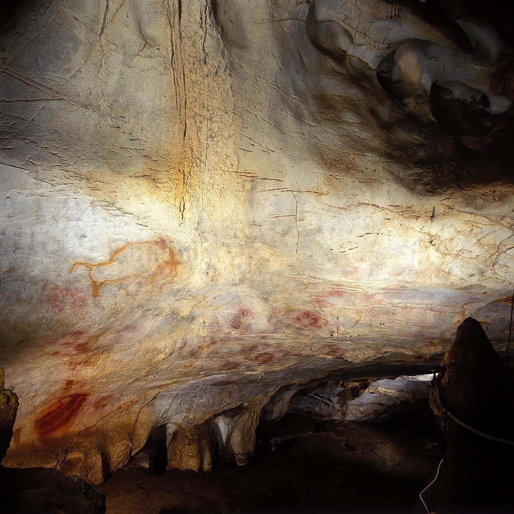
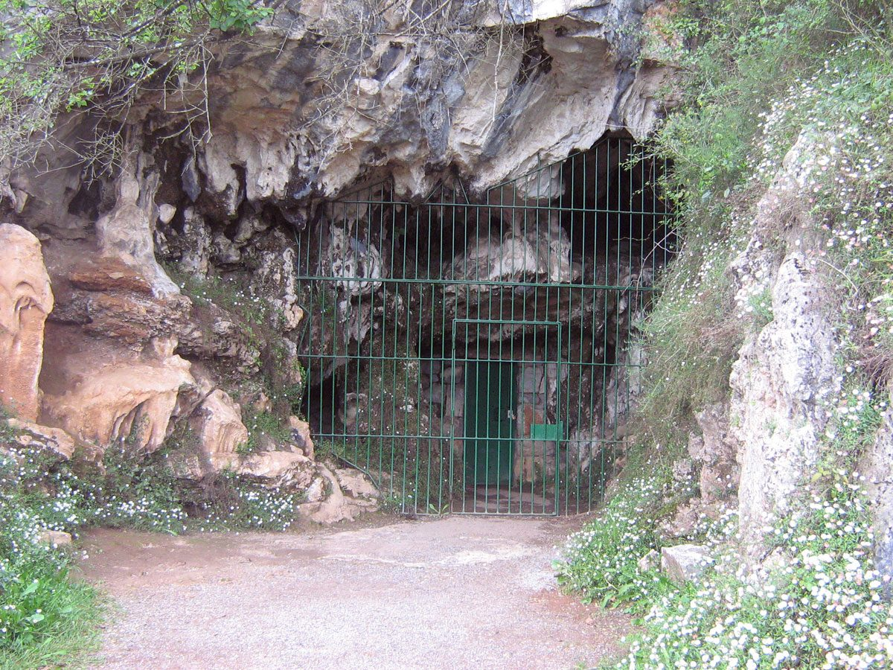

El Castillo y Las Monedas
Criterios: PC 5.1, PC 1.1
🤔 Pienso5 min
Qué hago aquí: Piensa un momento y contesta con lo que ya sabes. No pasa nada si no lo sabes: es para empezar.
Las cuevas tienen nombres curiosos: El Castillo, Las Monedas, La Pasiega, Las Chimeneas… ¿De dónde crees que vienen esos nombres?
📖 Leo y aprendo15 min
Qué hago aquí: Lee despacio, mira los dibujos y los ejemplos, y quédate con la idea clave del final.
El monte Castillo, en Puente Viesgo, junto al río Pas, tiene cuatro cuevas con arte: El Castillo, Las Monedas, La Pasiega y Las Chimeneas. Las cuatro son Patrimonio de la Humanidad.

Foto: Gabinete de Prensa del Gobierno de Cantabria · CC BY 3.0 es · Cueva del Castillo interior.jpg

Foto: Edward the Confessor · CC BY-SA 4.0 · Cueva de las Monedas.jpg
✏️ Hago25 min
Qué hago aquí: Haz las actividades en orden. Empieza siempre por las básicas.
Explica de dónde vienen los nombres de El Castillo y de Las Monedas. ¿Qué nos dicen las monedas sobre la historia de la cueva después de la Prehistoria?
Compara El Castillo y Las Monedas: fecha de descubrimiento, técnica, colores y temas. ¿Cuál es más antigua?
El yacimiento de la entrada de El Castillo tiene más de 150 000 años de ocupación. Explica por qué eso lo hace tan valioso para estudiar a los neandertales.
Explica cómo se hacían las manos en negativo. ¿Qué podemos averiguar estudiando su tamaño?
Si los discos rojos tienen más de 40 000 años y el Homo sapiens llegó a la zona hace unos 40 000 años, ¿por qué surge la duda sobre quién los pintó? ¿Qué pruebas harían falta para resolverla?
Explica qué hace que una pregunta sea científica. Escribe dos preguntas científicas y una que no lo sea sobre las cuevas del monte Castillo.
Las cuevas del monte Castillo se visitan con grupos pequeños y horarios fijos. Explica por qué y calcula: si entran grupos de 15 personas cada 30 minutos durante 7 horas, ¿cuántos visitantes al día como máximo?
🚀 Amplío (si quieres saber más)
Qué hago aquí: ¿Has terminado? Lee la curiosidad o elige el reto. Es voluntario.
Investiga la vida de Hermilio Alcalde del Río: profesión, cuevas que descubrió, libros que escribió y con quién colaboró. Haz una línea del tiempo con al menos cinco fechas y explica por qué fue tan importante para el patrimonio de Cantabria.
✅ Compruebo5 min
Qué hago aquí: Contesta sin mirar la ficha y marca cómo lo llevas.